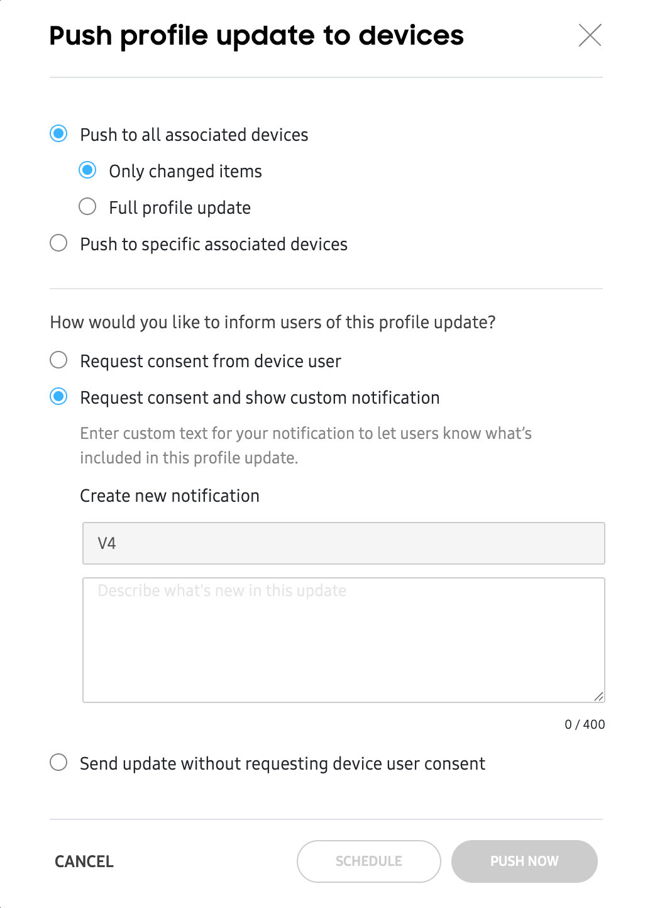

Manage profiles
Last updated April 9th, 2025
The Profiles page lists all your profiles, separated into two tabs: Setup/Dynamic profiles and Accessory profiles. By default, you’ll land on the Setup/Dynamic tab when you visit this page.
View profile information
Regardless of which tab you land on, you’ll see a table providing details of every profile in your account. The following table information is available:
| Availability | Column | Description |
|---|---|---|
| Common | PROFILE | The name of the profile. Click to update the profile details. |
| Common | KNOX VERSION | The version of Knox that the profile was intended for. If the profile is assigned to devices with a lower Knox version, the devices will still receive the configuration, but some settings may not work as intended. |
| Common | VERSION |
The version of the profile, based on the number of changes made. For Setup/Dynamic profiles only, you can click the version number to view a history of the profile's changes. From the pop-up window, you can:
|
| Setup/Dynamic profiles only | PROFILE TYPE | The type of profile created, either Dynamic or Setup. |
| Setup/Dynamic profiles only | TOTAL DEVICES |
The number of devices that have this profile assigned. Click the link to view the total number of devices at each stage of the profile assignment process. The following stages are shown:
|
| Accessory profiles only | TOTAL ACCESSORIES | The number of unique accessory IDs associated with this profile. |
| Common | UPDATED | The date the profile last received an update. If this is a new profile (V1), then this is the date of profile creation. |
| Common | SIZE | The total size of the profile in MB. |
Perform profile actions
Select any profile in the list, then click ACTIONS to view a list of available profile-related actions you can take. The following actions are available:
| Availability | Column | Description |
|---|---|---|
| Setup/Dynamic profiles only | Assign devices | Opens the ASSIGN DEVICES window showing devices that don't already have a profile assigned. To assign the profile:
|
| Common | Delete profiles | Delete a profile. If profile is currently assigned to devices, you must unassign the devices, or assign a different profile to the devices before deleting this profile. |
| Common | Clone to edit | Create a copy of the current profile. A copy of the profile opens, populated with the previous profile's info and settings. |
| Setup/Dynamic profiles only | Download profiles as a CSV | Download a CSV version of the profile table for offline viewing. |
| Setup/Dynamic profiles only | Push update to devices |
Push the latest version of a profile to your devices, provided you didn't already push the update when you updated your profile. This action can only be taken if devices associated with the profile are in the following states:
|
Update profiles
Once a profile is created, it can be edited by simply clicking the profile’s name in the table. Depending on how the profile was created (whether it is a Setup or Dynamic edition profile), devices will receive the update differently.
Setup edition profiles
When you make updates to a Setup edition profile, your changes cannot be applied to devices that already have the profile assigned. However, if you have new devices, or devices that don’t already have a profile applied, then your changes will be applied to those devices.
If you want to push updates to devices that already have the (Setup edition) profile applied, then those devices must go through a factory reset in order for the settings to take effect.
Dynamic edition profiles
When you make updates to a Dynamic edition profile, you have the options to either push the updates immediately, schedule an update, or push the update at a later time.
Push updates immediately or schedule an update
After you make your updates to your profile and click SAVE, you’ll see an option to push the update. Click PUSH, then in the pop-up window, you’ll have the following options:

-
You can choose whether you want to push a partial (only changed items) or full (all settings) update either to all devices associated with this profile, or to only specific devices.
- If you choose to push to only specific devices, you’ll need to specify the devices on the next screen.
-
You can choose whether you want to inform the users of this update or allow users to provide consent before updating.
- Select Request consent from device user if you want the profile to download only after the user agrees to the update.
- Select Request consent and show custom notification if you want to add a custom message (up to 400 characters) to inform users of the update before they give consent.
- Select Send update without requesting device user consent if you want to force the device to download the profile without user consent.
Once you select your update options, you can click PUSH NOW to immediately push the update to your associated devices, or click SCHEDULE to select the date and time for the system to push the updates.
If you previously chose to push updates to specific devices, click SELECT DEVICES, then on the next page, select your devices and either click PUSH NOW to immediately push the update to your devices, or click SCHEDULE to select the date and time for the system to push the updates.
Push updates at a later time
If you make updates to your profile, you can choose to not push or schedule the update right away. This can be useful for when you want make several profile changes, but not commit to pushing those changes until you’re ready to do so.
To push updates at a later time, simply make your changes, then click SAVE. When you’re ready to push the profile to your devices, do the following:
- Go to the Profiles page, then select the profile that you want to push.
- Click ACTIONS > Push profile update to devices.
- Select how you want to push the update.
Delete profiles
Before you can delete a profile, you must first ensure that it isn’t currently assigned to any devices. If the profile is assigned, you’ll have to either unassign it, or assign a different profile in order to proceed.
To delete a profile from Knox Configure, simply go to the Profiles page, select the profile, then click ACTIONS > Delete profiles.
On this page
Is this page helpful?